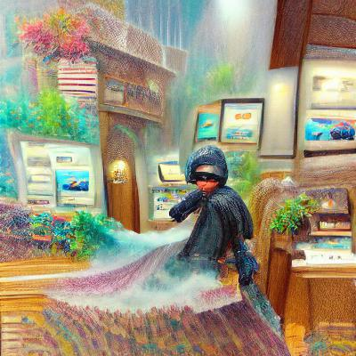

The only known image of Stu Brazelton, CEO
Stu Brazelton, the proprietor of the bank coequally known as Brazeltonz’s, does not actually exist. Look deep enough into public record and one will see he sprung into being some fifty-odd years ago: a bright lad with an eye-watering fortune and a friendly face, and absolutely no family, background, or birth certificates. With the ever-increasing size of the bank, there are always new souls curious about the history of their bosses’ boss. Many tales exist about Stu Brazelton’s cloudy origins. These are two of the most popular. According to some, Stu Brazelton was once known as Henry Seele: the son of a rancher. Henry chafed at the life he was born into, expressing dreams to be a merchant, or an adventurer, or a merchant adventurer. Henry’s father didn’t need another son prancing about pretending to be a noble; he did need an accountant for his ranch. So he sat Henry down one day and explained how to manage the books, before handing him the key to the safe. Henry looked at his father’s balances and, in a move of either great cleverness or tremendous stupidity, decided to hand out small loans to anyone who needed quick money. He was careful to keep the loans small and manageable, and kept the interest rates small besides – one to two percent. In this way he quickly built up a reliable reputation, and a respectable fortune to back it up. As soon as he was confident of supporting himself, Henry returned his father’s key and secured a post on the next merchant adventurer ship to visit the port. By way of his knack with money, he quickly ingratiated himself with the ship’s master. He also quickly discovered he didn’t actually enjoy merchant adventuring. So, Henry jumped ship when they anchored at the capitol. Here he put most of his fortune into bonds and stocks, keeping enough to carry on delivering loans and supporting customers. This business grew, as businesses must, until Henry was all but running his own bank, only without any of the expected benefits. He pulled his funds and chose the name Brazelton (after a knight who had passed through his village when he was a boy, so the story goes), and the bank has been in business ever since. The second story paints Stu Brazelton’s history in quite a darker shade. The whisperers of this tale insist the proprietor is the infamous Jeffrey Crick. You don’t know Jeffrey Crick? The man who stole the Empress Sampson’s blue diamonds from around her neck, while she stood and addressed her husband’s court? While active, he was the most notorious jewel thief on the coast – and in quite a bit of the country. He thrilled in breaking into manor houses in broad daylight: climbing through second-storey windows while the inhabitants sipped tea below his silent feet. Over his career, Crick took millions of pounds worth of jewelry from armoires, from locked safes, from bank vaults. And then, the story goes, he caught pneumonia. He went to the hospital (one must assume under a fake name) and was unable to pay for treatment, his assets being entirely tied up in earrings and cufflinks. He survived – obviously, and must have realized there was a problem with his career. Over the next few months Crick liquidized his assets, and then, trusting no one else to hold his money (he’d broken into every one of the banks he could choose from, recall), forged himself identity as Stu Brazelton and used the fortune to open his own bank. Once a month, it is said, Brazelton / Crick dons gloves and a mask and breaks into his own vaults. Just for the hell of it.